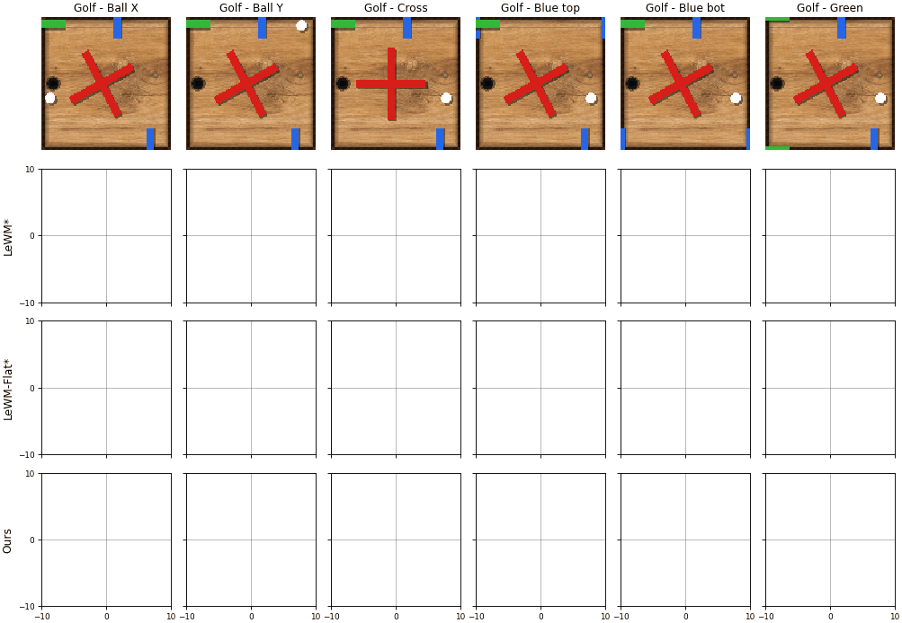

Joint Embedding Predictive Architectures (JEPAs) are a promising paradigm for learning task-agnostic latent world models without visual reconstruction. However, standard JEPA training exhibits a strong inductive bias towards slow features, causing feature suppression and the collapse of latent representation. While inverse dynamics provides temporal anti-collapse, it relies on action labels and offers little incentive to embed general, unlabeled dynamics. We introduce Difference Image and Single image embedding Regularization (DISReg), a novel regularizer that builds on an inverse-dynamics-style module that predicts temporal difference image embeddings without any pixel reconstruction loss, encouraging balanced static and dynamic feature learning. DISReg consists of a static term that shapes the distribution of the image embedding and encourages slow features, and a dynamic term, which, unlike direct regularization on the embedding, imposes no constraint on the image embedding's shape or distribution and instead only incentivizes that dynamic features be present. By integrating this regularizer into a standard JEPA, we establish our new architecture, MotionJEPA. Latent probing demonstrates that MotionJEPA produces more complete representations than other methods, and our trajectory analysis shows it maintains geometrically simple latent embeddings with low curvature. We further show that MotionJEPA improves downstream planning success under static-background distractors across four environments.
We probe frozen encoder embeddings \(z\) with residual MLPs on three synthetic games with separable feature groups. Normalized MSE of \(1.0\) is chance (predicting the evaluation-set mean). Green cells recover a feature (\(\mathrm{NMSE}\le 0.1\)); red cells are collapsed. Bold / underline mark best / second-best. Models marked * use per-environment hyperparameter search; MotionJEPA uses one setting (\(\lambda_z{=}0.25\), \(\lambda_{\mathrm{pred}}{=}0.5\), \(\lambda_d{=}2\)) on all three games.
| Pong | Dino | Golf | |||||||||||||
|---|---|---|---|---|---|---|---|---|---|---|---|---|---|---|---|
| Method | avg. | ball | bats | score | avg. | cactus | clouds | dino | hearts | sky | avg. | bars | cross | ball | wood |
| ForwardOnly | 1.058 | 1.260 | 1.001 | 0.930 | 0.949 | 1.003 | 1.002 | 1.002 | 1.031 | 0.511 | 1.980 | 1.233 | 1.558 | 1.077 | 4.324 |
| Random | 0.116 | 0.143 | 0.093 | 0.115 | 0.361 | 0.833 | 0.535 | 0.116 | 0.031 | 0.004 | 0.776 | 0.857 | 0.296 | 0.989 | 0.653 |
| SMWM | 0.657 | 1.001 | 0.002 | 1.002 | 0.649 | 0.434 | 1.075 | 0.028 | 0.787 | 0.071 | 0.727 | 1.000 | 0.986 | 0.002 | 1.003 |
| LeWM | 0.658 | 0.999 | 1.002 | 0.003 | 0.394 | 0.769 | 0.248 | 0.983 | 0.012 | 0.005 | 0.763 | 1.002 | 1.001 | 0.942 | 0.084 |
| LeWM-Time | 1.077 | 1.100 | 1.071 | 1.063 | 0.913 | 1.003 | 0.992 | 1.002 | 1.029 | 0.248 | 1.053 | 1.008 | 1.014 | 1.004 | 1.195 |
| LeWM-Detached | 0.171 | 0.174 | 0.331 | 0.007 | 0.645 | 1.002 | 0.727 | 1.002 | 0.017 | 0.006 | 0.811 | 0.924 | 0.683 | 0.930 | 0.572 |
| LeWM-Flat | 0.284 | 0.890 | 0.014 | 0.005 | 0.331 | 0.522 | 0.593 | 0.002 | 0.006 | 0.007 | 0.694 | 1.002 | 0.379 | 0.993 | 0.052 |
| SMWM* | 0.651 | 0.983 | 0.002 | 1.003 | 0.606 | 0.398 | 1.005 | 0.003 | 0.775 | 0.069 | 0.727 | 1.000 | 0.986 | 0.002 | 1.003 |
| LeWM* | 0.061 | 0.163 | 0.018 | 0.012 | 0.282 | 0.990 | 0.059 | 0.751 | 0.011 | 0.012 | 0.760 | 1.001 | 1.002 | 0.909 | 0.110 |
| LeWM-Time* | 0.687 | 0.022 | 0.972 | 1.002 | 0.697 | 0.005 | 1.004 | 0.003 | 0.971 | 1.004 | 0.985 | 0.972 | 0.992 | 0.984 | 1.002 |
| LeWM-Detached* | 0.048 | 0.103 | 0.038 | 0.008 | 0.332 | 1.005 | 0.073 | 0.959 | 0.011 | 0.017 | 0.745 | 1.002 | 1.002 | 0.908 | 0.048 |
| LeWM-Flat* | 0.008 | 0.012 | 0.004 | 0.008 | 0.301 | 0.650 | 0.498 | 0.002 | 0.007 | 0.016 | 0.299 | 0.317 | 0.059 | 0.312 | 0.377 |
| MotionJEPA (Ours) | 0.004 | 0.005 | 0.003 | 0.004 | 0.021 | 0.011 | 0.037 | 0.006 | 0.006 | 0.004 | 0.061 | 0.095 | 0.083 | 0.033 | 0.033 |
Offline residual-MLP probe NMSE \(\downarrow\) of the image embedding \(z\). MotionJEPA is the only method with NMSE below \(0.1\) on every feature group.
We visualize how individual state features map into the latent. Each panel varies one feature over a 1D range while holding the rest of the state fixed, encodes the rendered frames, and projects the resulting trajectory onto the first two principal components (no variance rescaling). Color runs from violet (\(0\)) to red (\(1\)). MotionJEPA keeps these paths geometrically simple; collapsed models fold or scramble the dynamic features.

We evaluate CEM planning on the four LeWorldModel control tasks after overlaying a static wood-texture distractor. Initial states are sampled from the test split; horizons are 25 and 50 environment steps. MotionJEPA is the strongest standalone method; combining it with inverse dynamics (Ours + IDM) is best overall.
| Method | Cube | PushT | Reach. | 2Room | Mean |
|---|---|---|---|---|---|
| 25-step planning | |||||
| LeWM | 43.6 | 4.0 | 5.2 | 28.8 | 20.4 |
| IDM | 76.0 | 83.6 | 49.2 | 100.0 | 77.2 |
| Ours (\(\lambda_z{=}0\)) | 60.4 | 76.8 | 24.8 | 99.6 | 65.4 |
| Ours | 78.0 | 78.4 | 71.2 | 99.6 | 81.8 |
| Ours + IDM | 80.8 | 82.4 | 82.4 | 100.0 | 86.4 |
| 50-step planning | |||||
| LeWM | 24.4 | 2.4 | 2.0 | 18.4 | 11.8 |
| IDM | 53.2 | 26.0 | 62.0 | 96.0 | 59.3 |
| Ours (\(\lambda_z{=}0\)) | 48.0 | 21.2 | 33.6 | 94.0 | 49.2 |
| Ours | 63.2 | 28.0 | 98.0 | 92.0 | 70.3 |
| Ours + IDM | 61.2 | 29.6 | 98.4 | 97.2 | 71.6 |
Planning success rate (%). Bold / underline: best / second-best in each column.
Side-by-side CEM planning with a static wood-texture distractor. Left: MotionJEPA. Right: original LeWM. All clips below are cases where MotionJEPA succeeds and LeWM fails.
Ours success · LeWM failure
Ours success · LeWM failure
Ours success · LeWM failure
Ours success · LeWM failure
Ours success · LeWM failure
Ours success · LeWM failure
Ours success · LeWM failure
Ours success · LeWM failure
@article{motionjepa2026,
author = {Karmann, Markus and Li, Shile and Intern{\`o}, Christian and Andreis, Bruno
and Klindt, David and Balestriero, Randall and Gu, Jindong and Torr, Philip
and Zhang, Qi and Jiang, Peng-Tao and Zhang, Hao and Li, Bo and Urfalioglu, Onay},
title = {MotionJEPA: Preventing Temporal Feature Collapse by Capturing Visual Changes in Latent Space},
year = {2026},
}